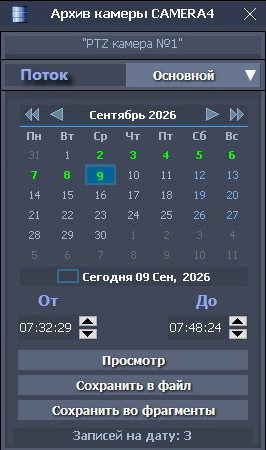
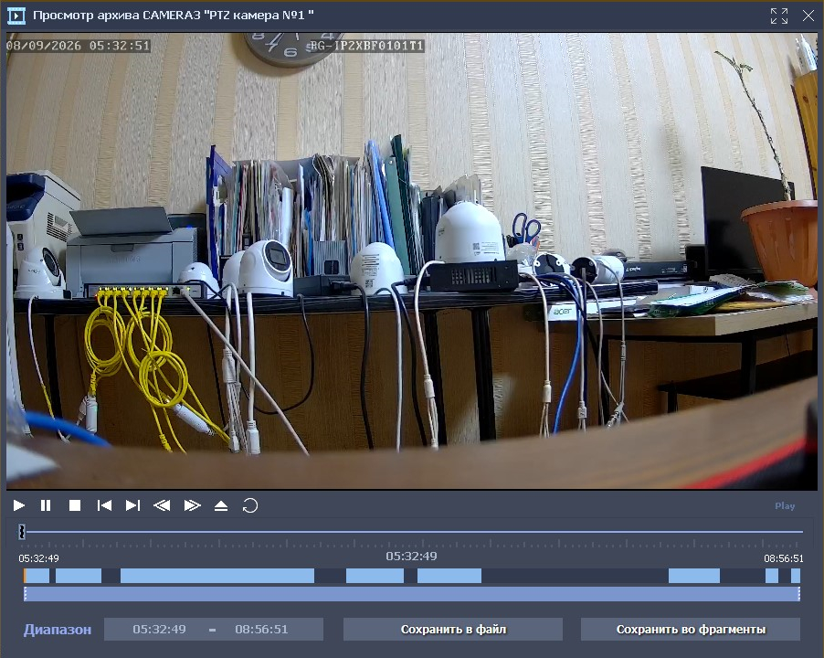
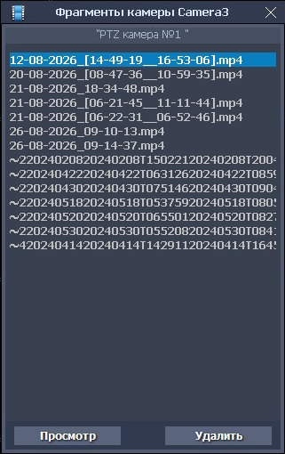
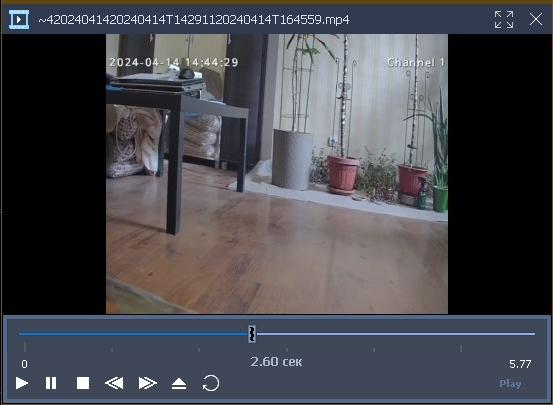

Архив и фрагменты
Архив и фрагменты
Форма для работы с архивом камеры вызывается из контекстного меню, для выбранной камеры. Одновременно можно работать с несколькими архивами камер.

На этой форме можно выбрать:
- архивные записи требуемого потока из выпадающего списка «Поток»;
- требуемую дату и диапазон времени (От-До), архивных записей.
На календаре формы выделяются (зеленым цветом) дни, содержащие архивные записи, для выбранного потока. При выборе конкретного дня, и требуемого интервала времени, в нижней части формы отображается количество найденных архивных записей в этом интервале.
Найденные записи могут быть сохранены в видео файл на диск (кнопка «Сохранить в файл») или в избранные видео фрагменты (кнопка «Сохранить во фрагменты»). Формат сохраняемых файлов - .mp4.
Для камер, производящих запись в архив со звуком, все сохраняемые видео файлы, также будут содержать и звуковую дорожку.
Записи могут быть просмотрены в архивном плеере, вызываемого по нажатию на кнопку «Просмотр».

Архивный плеер предназначен для просмотра и сохранения выбранных записей в видео файл на диске или в избранные видео фрагменты.
На форме плеера отображаются:
- кнопки управления проигрыванием: Play (Играть), Pause (Пауза), Stop (Стоп), Prev (Назад), Next (Вперед), FastForward (Перемотка вперед), FastBackward (Перемотка назад), Номе (В начало), Loop (Цикл).
- активный, управляемый мышью, слайдер;
- графическая панель, с отображением распределения файлов в архиве в заданном временном интервале (начальный временной интервал, установленный на архивной форме);
- панель выбора требуемого диапазона, в начальном временном интервале. Выбор требуемого диапазона, производится перемещением ограничителей на этой панели: значения полей Диапазон, при этом будут изменяться (изначально эти значения соответствуют начальному временному интервалу, установленному на архивной форме);
- Кнопки сохранения записей из диапазона в видео файл на диске или во фрагменты (формат сохраняемых файлов .mp4). Для камер, производящих запись в архив со звуком, все сохраняемые видео файлы, также будут содержать звуковую дорожку.
Сохраненные фрагменты, отображаются в виде списка на форме фрагментов, вызываемой из контекстного меню, для выбранной камеры

Выбранный в списке фрагмент может просмотрен (кнопка «Просмотр») во встроенном видеоплеере или удален (кнопка «Удалить»).

Видеоплеер содержит: активный слайдер, с отображением временных меток и кнопки управления проигрыванием: Play (Играть), Pause (Пауза), Stop (Стоп), Forward (Вперед), Backward (Назад), Номе (В начало), Loop (Цикл).